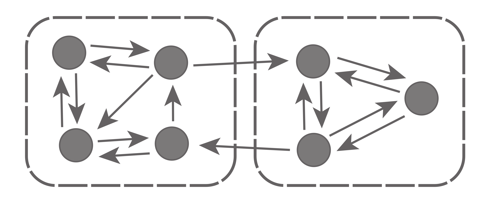
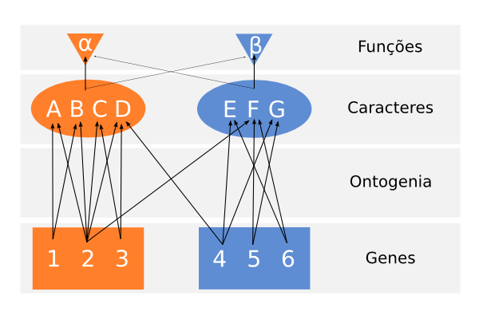
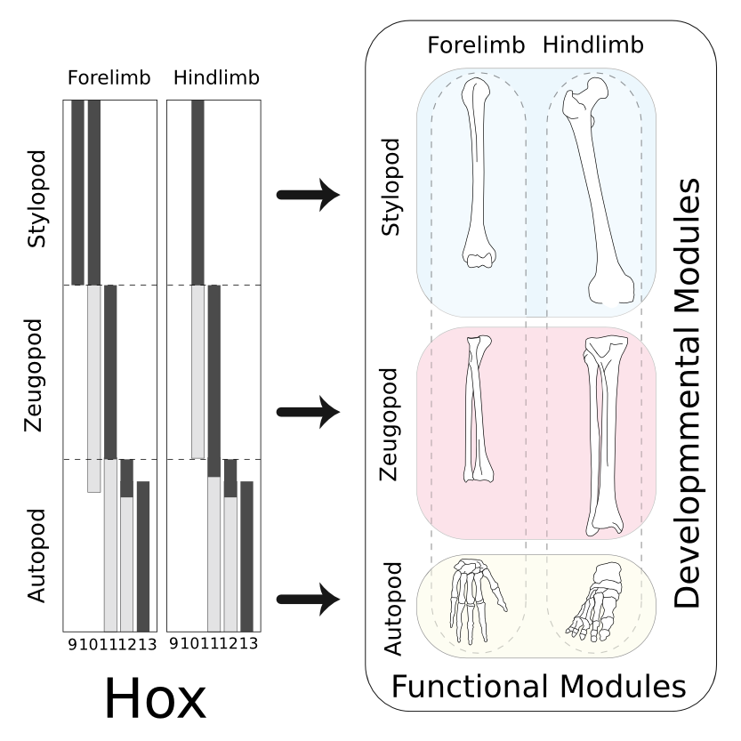
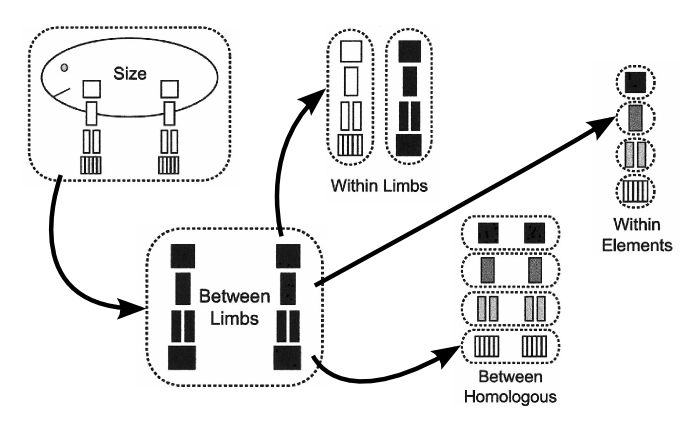

Perspectivas sobre o reconhecimento de padrões de modularidade e suas implicações para a evolução de morfologias complexas
Guilherme Garcia
Universidade de São Paulo
Modularidade

Sistemas Morfológicos

Regulação Gênica

Interações Ontogenéticas

Palimpsest